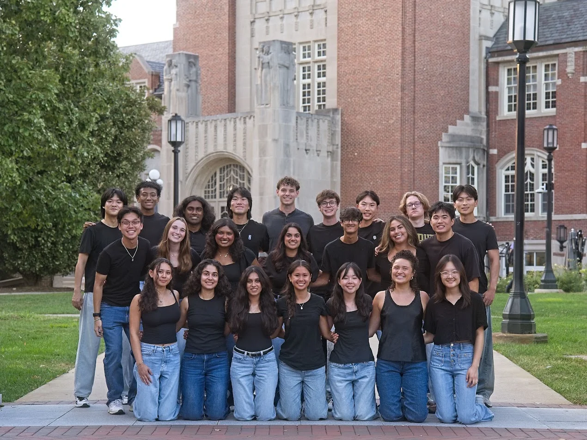

New here? Double-click the icons on the left, like Initiatives, Meet the Board and Contact Us, to open them and start exploring.

Hello from USB!
The Computer Science Undergraduate Board is dedicated to improving the student experience for CS/DS/AI students at Purdue - whether by managing CS193, hosting forums for student advocacy, or maintaining a database of undergrad-tailored resources, USB is continually creating initiatives that will uphold our values.
This year's board is made up of 24 students who run everything on this site. Open Meet the Board to see who we are and which initiatives each of us works on.
Our Mission
The Computer Science Undergraduate Student Board was established in 1999 to promote a supportive and engaged community within Purdue's Computer Science Department, and to use its relationship with faculty, the Computer Science Corporate Partners Program, and administration to advocate for the student body.
Our Objectives
Advocacy
USB cares about improving the student experience. Visit our daily office hours or attend the undergraduate town hall to discuss ways to improve our community.
Events
We put on events that matter, from fun events like Pizza with Professors and Freshman Social Hour, to professional opportunities through career oriented panels and events.
Resources
We're here to help CS, DS, and AI students. We teach CS193 Tools for first-years, run a free help room for intro CS courses, as well as maintain a tutor list, blog, and student wiki.